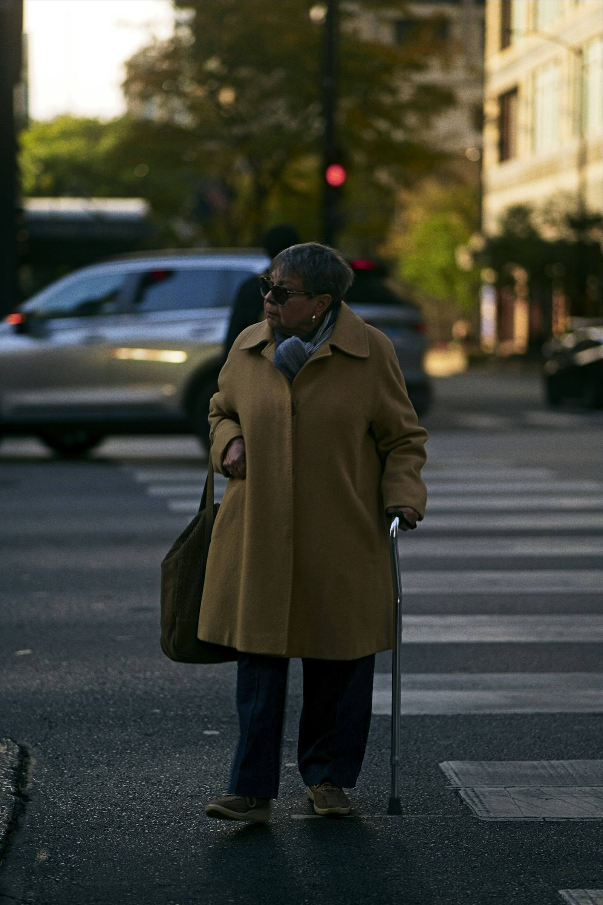
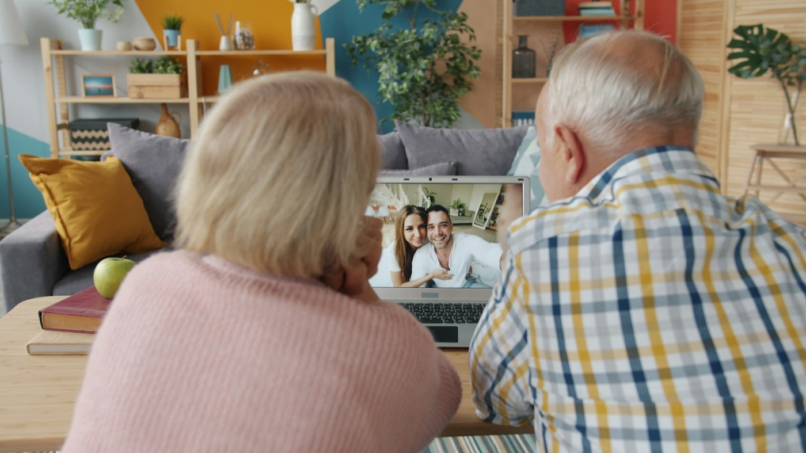
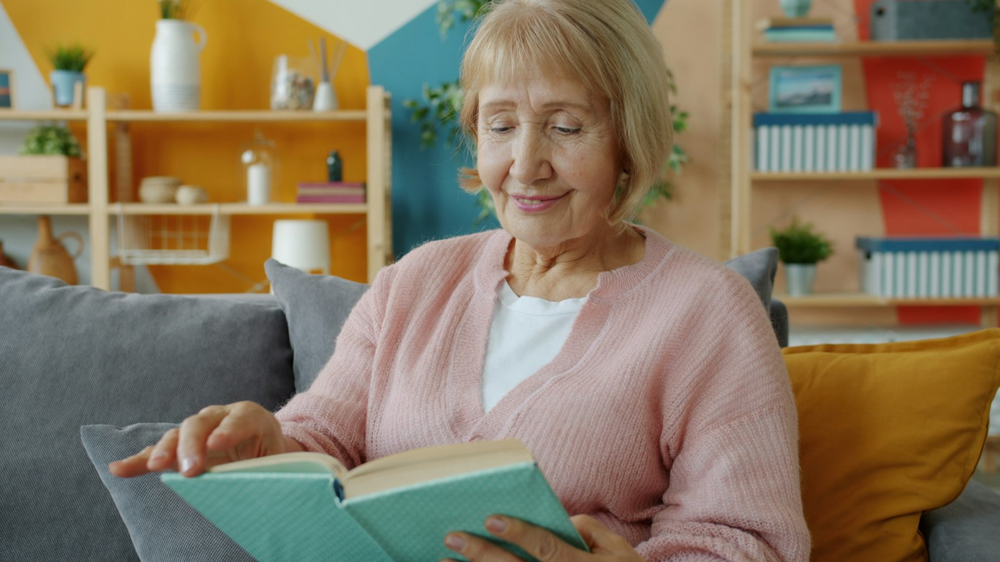

The short answer
Support at Home is the government program for care at home. You contact My Aged Care, get assessed, receive one of 8 funding classifications (about $11,010 to about $80,137 a year from July 2026), choose a registered provider and pay a contribution based on your pension status. Clinical care such as nursing has no contribution.
Step by step
From first call to first visit.
Scroll down: each step lights up as you reach it.
- 1
Contact My Aged Care
Call 1800 200 422 or apply online at myagedcare.gov.au. A family member can do this with permission.

- 2
Have an assessment
An assessor visits to understand daily needs, memory, safety and the support around the person.

- 3
Get a classification
You receive a notice of decision with one of 8 ongoing classifications, or a short-term pathway. Funding may take time to be assigned.

- 4
Choose a provider
Compare registered providers on price, services, dementia skills and how they communicate with families.

- 5
Sign a service agreement
It sets out services, prices, your contributions and how to change or complain. Read it before you sign.

Classifications
Eight funding levels.
Budgets are indexed each July. The exact amount for each level is on the department's published schedule.
Annual Support at Home budget, July 2026 (AUD, approximate)
Source: Department of Health, Disability and Ageing, Support at Home classifications and budgets, July 2026. Levels 2 to 7 sit between these; check the official schedule.
Contributions
What you pay, and what the government pays.
| Pension status | Clinical care | Independence (e.g. personal care) | Everyday living (e.g. cleaning, meals) |
|---|---|---|---|
| Full age pensioner | 0% | 5% | 17.5% |
| Part pensioner or CSHC holder | 0% | 5% to 50% | 17.5% to 80% |
| Self-funded retiree | 0% | 50% | 80% |
Rates shown are the standard rates for people who entered Support at Home from 1 November 2025. People who held a Home Care Package before then may have lower 'no worse off' rates. A lifetime cap on contributions applies.
The rest is treated as everyday living (cleaning, meals, shopping). Clinical care such as nursing carries no contribution.
General information only, based on the standard rates for people entering Support at Home from 1 November 2025: full pensioners pay 5% for independence services and 17.5% for everyday living; self-funded retirees pay 50% and 80%; part pensioners pay in between, set by Services Australia. A lifetime cap applies. Budgets are indexed each July. Check your own figures with My Aged Care.
 A volunteer pushing a trolley along a hospital corridor
A volunteer pushing a trolley along a hospital corridor





Short-term pathways
- Restorative Care Pathway: about 12 weeks of allied health and nursing to regain independence
- End-of-Life Pathway: extra support at home in the last months of life
- Assistive Technology and Home Modifications (AT-HM) scheme: equipment and home changes
Commonwealth Home Support Programme
People who need only a little help, such as a few hours of cleaning or a meal service, may be supported through the Commonwealth Home Support Programme, which is planned to move into Support at Home later. My Aged Care will tell you which applies.
Choosing a provider
Questions worth asking any provider.
- Are you registered, and for which categories?
- What are your prices, and do they match the price caps?
- Who will actually come, and will it be the same people?
- How are your support workers trained in dementia?
- How do you tell the family what happened at each visit?
- How do I complain, and who do I escalate to?
Official information: myagedcare.gov.au and health.gov.au: Support at Home.
Can I use Support at Home with a private provider?
Funded services must be delivered by a registered provider. You can also pay privately for extra hours.
How long does assessment take?
It varies by region. Start early: contact My Aged Care as soon as you notice help is needed.
When will you be a provider?
When our registration questions are settled. Join the waitlist and we will tell you as soon as we can, honestly.
No question matches. Call us and ask a person.

Care is a hundred small, good things.
A hand held. A story remembered. A routine that fits them.




Next step
Want help understanding your letter?
Call (02) 5550 0142. A care advisor will walk you through it, even if we cannot be your provider yet.